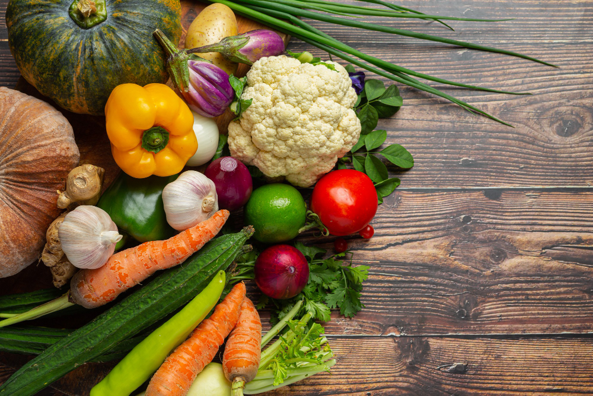

Un alimento es todo aquel producto que comemos o bebemos y que aporta nutrientes a nuestras células. Ejemplos de alimentos son la fruta, la carne y la leche. Los alimentos están constituidos por nutrientes y otras sustancias, como por ejemplo la fibra vegetal, los estabilizantes, los colorantes, etc.
Los alimentos pueden clasificarse según distintos criterios.
Dependiendo de su origen pueden ser:
Alimentos de origen animal, como la carne, la leche, los huevos o el pescado.
Alimentos de origen vegetal, como las frutas, los cereales o las verduras.
El agua y la sal son alimentos de origen mineral.
En función de los nutrientes que contienen y de las funciones que realizan:
Grupo 1: Leches y derivados
Realizan una función plástica, participan en el mantenimiento y en la formación de las distintas estructuras del organismo. Son alimentos que aportan proteínas y energía. Los alimentos que pertenecen a este grupo son la leche, los yogures, el queso.
Realizan una función plástica. Son alimentos que proporcionan gran cantidad de proteínas, hierro y vitaminas del grupo B. Las proteínas de la carne son tan importantes como las del pescado o los huevos, pero sí es verdad que el pescado es más saludable porque además aporta grasas omega 3.
Las carnes menos grasas son las de vacuno, caballo, pollo, pavo y conejo, las más grasas son las de cerdo, cordero y pato.
Además de los pescados, también podemos incluir en este grupo los mariscos. Tienen un alto contenido proteico y son muy ricos en fósforo, sodio, yodo, potasio y hierro.
Realizan una función plástica y energética. A nivel energético aportan hidratos de carbono, aunque las legumbres y los frutos secos también aportan proteínas.
Todos los tubérculos se encuentran en este grupo: patatas, boniatos, batatas... Entre las legumbres destacan las alubias, garbanzos, lentejas..., que aportan mucha fibra. Y los frutos secos (avellanas, almendras, nueces, cacahuetes, castañas...) que aportan grasas y son una gran fuente de minerales.
Poseen una función reguladora en el cuerpo. Aportan vitaminas, minerales y fibra, también contienen agua. Entre ellas tenemos las acelgas, lechuga, espinacas, judías verdes, zanahorias...
Se ha relacionado este grupo de alimentos con beneficios para la salud, más específicamente, con beneficios cardiovasculares.

Image by jcomp on Freepik. Verduras y hortalizas(CC BY-NC-ND)
Grupo 5: Frutas
Es muy similar al grupo de verduras y hortalizas, aportan vitaminas, minerales y gran cantidad de agua, las frutas poseen azúcares como la sacarosa, la fructosa y la glucosa pero con un bajo aporte calórico. También realizan una función reguladora.
Algunas de las frutas que más se consumen son: naranjas, manzanas, peras, uvas, plátanos, ciruelas, fresas, melón, sandía, piña...
El principal aporte de este grupo son las grasas, junto con el grupo anterior es uno de los más calóricos. También aportan vitaminas A, E, D y K. Su principal función es la energética.